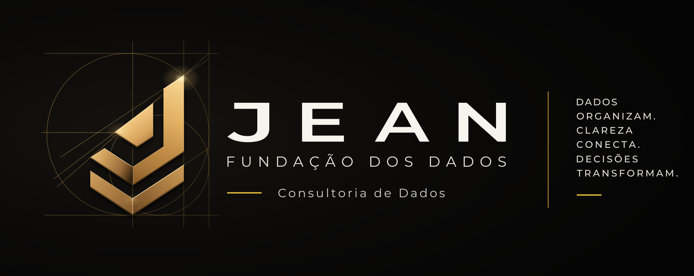

LOGO PRINCIPALSímbolo + wordmark + assinatura + serviço

SÍMBOLOVersão isolada
VERSÃO EM FUNDO CLAROAplicação principal
VERSÃO MONOCROMÁTICAUso institucional e em uma cor
VERSÃO EM FUNDO ESCUROAplicação em fundos escuros
APLICAÇÃO DIGITALÍcone de app / favicon
#0A0A0APreto profundo
#1E1E1EGrafite
#D4AF37Dourado premium
#EDE7DAAreia clara
#FAFAF8Branco
PALETA DE CORESMontserrat · ouro em faces · status só para metas